Antenna Tube Replacement (Installation)
NOTE:Proper alignment of the antenna tube is important so that the antenna collar fits the contour of the car body. If the antenna tube is not properly aligned, the antenna collar may cause the body to deform when the antenna nut is tightened.
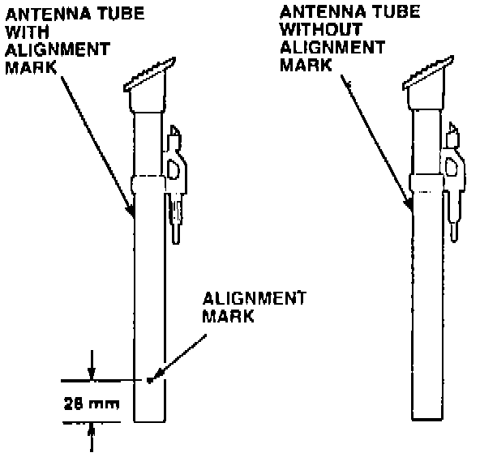
12. Inspect the replacement antenna tube.
^ If the replacement antenna tube has an alignment mark, go to step 18.
^ If the replacement antenna tube does not have an alignment mark, continue with step 13.
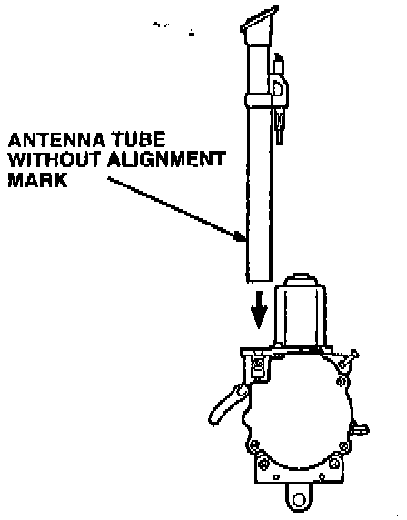
13. Insert the new antenna tube without an alignment mark into the antenna assembly. Install the clamping screw removed in step 6 into the antenna assembly, but do not tighten the clamping screw at this time.
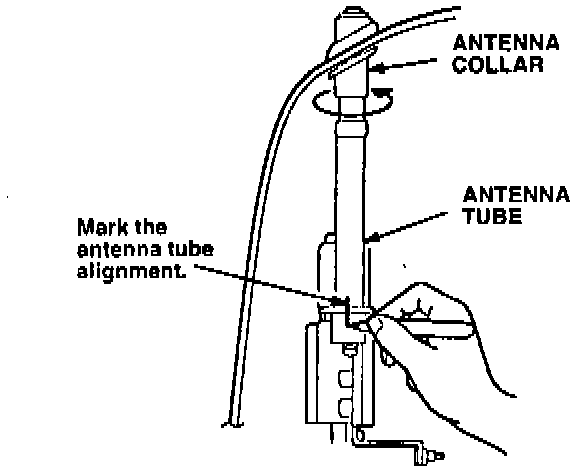
14. Temporarily install the antenna assembly in the car. Adjust the antenna tube so that the collar fits the contour of the body.
15. With the antenna tube properly adjusted, mark the tube and the antenna assembly with a felt-tip marker to note the alignment.
16. Remove the antenna assembly from the car.
17. Check the alignment of the antenna tube to the antenna assembly; then tighten the clamping screw. Once you have clamped the tube in place, go to step 19.
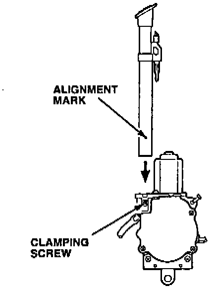
18. Insert the antenna tube with an alignment mark into the antenna assembly. Align the mark on the antenna tube with the clamping screw hole on the antenna assembly; then secure the tube with the clamping screw removed in step 6.
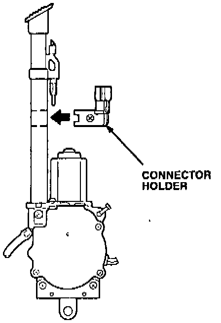
19. If applicable, install the connector holder onto the antenna tube as shown, and tighten the screw.
20. It the antenna nut did not have an O-ring on it, install a new collar seal into the antenna collar.
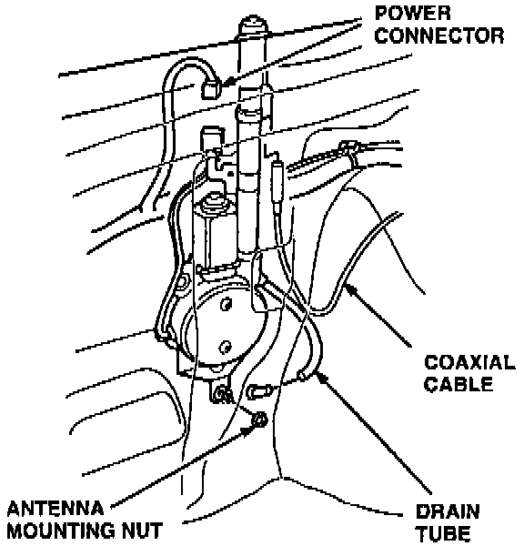
21. Install the antenna assembly into the car, but do not tighten the antenna motor mounting nut(s) at this time.
22. Connect the power connector, the coaxial cable, and the drain tube to the antenna assembly.
23. Insert the antenna mast into the antenna tube; then turn the radio off to retract the antenna mast.
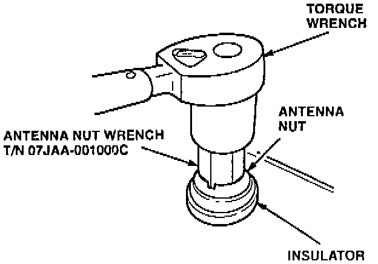
24. Reinstall the antenna nut; then tighten it to specified torque using the special tool and a torque wrench.
^ 199O-93 Integra: 2.0 Nm (0.20 kg-m, 17 lb-in)
^ 1994-95 Integra: 2.3 Nm (0.23 kg-m, 20 lb-in)
^ 1992-94 Vigor: 2.3 Nm (0.23 kg-m, 20 lb-in)
25. Tighten the antenna motor mounting nut(s).
Antenna Collar Replacement
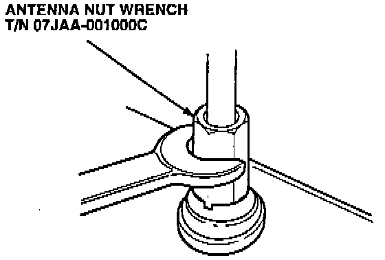
1. Remove the antenna nut with the special tool.
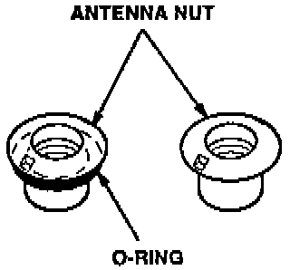
2. Inspect the antenna nut.
^ If the antenna nut has an 0-ring, do not install an antenna seal in the replacement collar.
^ If the antenna nut does not have an 0-ring, you must install an antenna seal in the replacement collar.
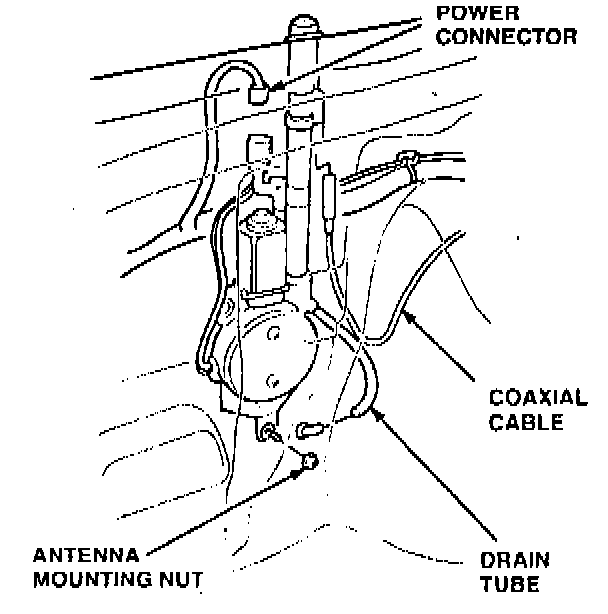
3. Disconnect the coaxial cable, the power connector, and the drain tube from the antenna assembly. Loosen the antenna motor mounting nut(s); then remove the antenna assembly from the car.
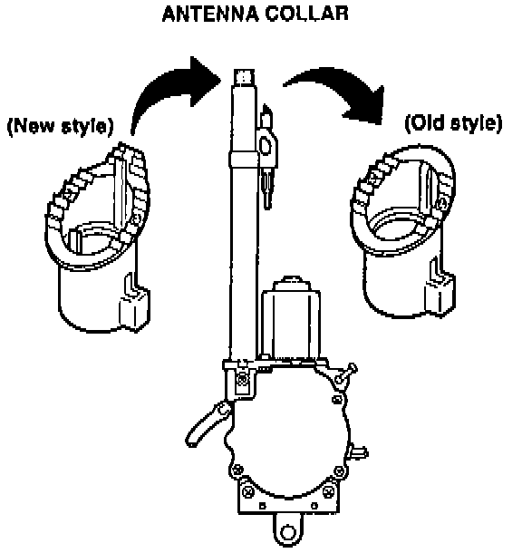
4. Remove and discard the antenna collar.
5. Install the new antenna collar onto the antenna tube.
6. If the antenna nut did not have an 0-ring on it, install a new collar seal into the antenna collar.
7. Install the antenna assembly into the car, but do not tighten the antenna motor mounting nut(s) at this time.
8. Connect the power connector, the coaxial cable, and the drain tube to the antenna assembly.
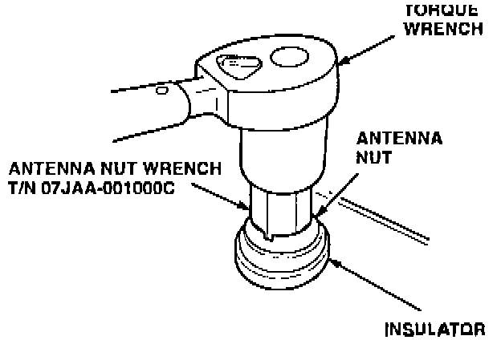
9. Reinstall the antenna nut; then tighten it to specified torque using the special tool and a torque wrench.
^ 1990-93 Integra: 2.0 Nm (0.20 kg-m, 17 lb-in)
^ 1994-95 Integra: 2.3 Nm (0.23 kg-m, 20 lb-in)
^ 1992-94 Vigor: 2.3 Nm (0.23 kg-m, 20 lb-in)
10. Tighten the antenna motor mounting nut(s).